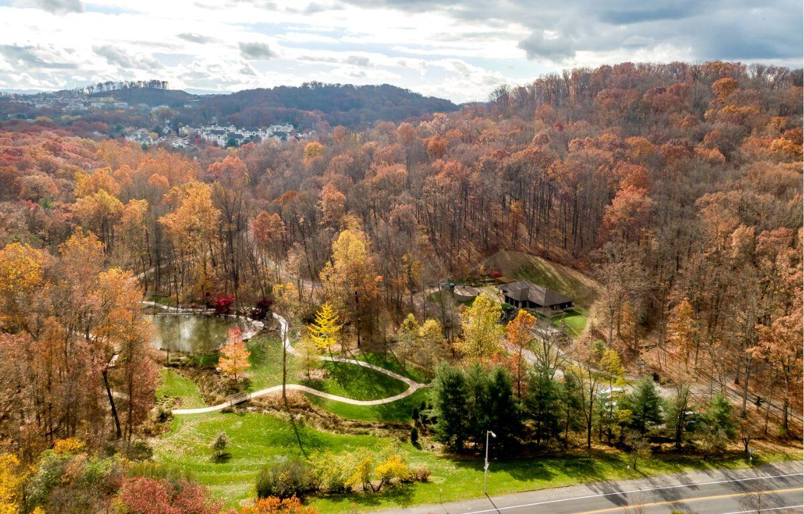
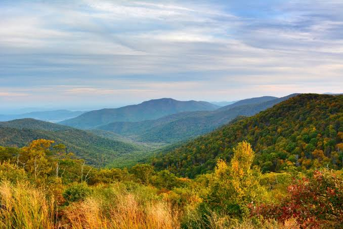
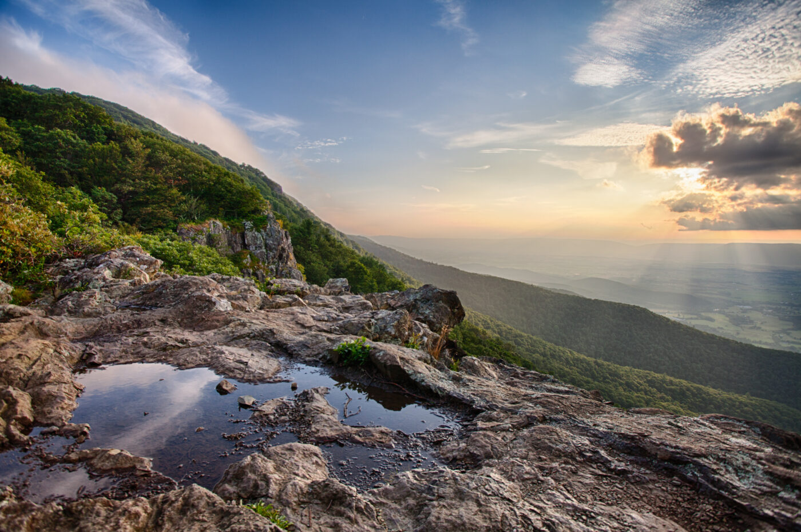
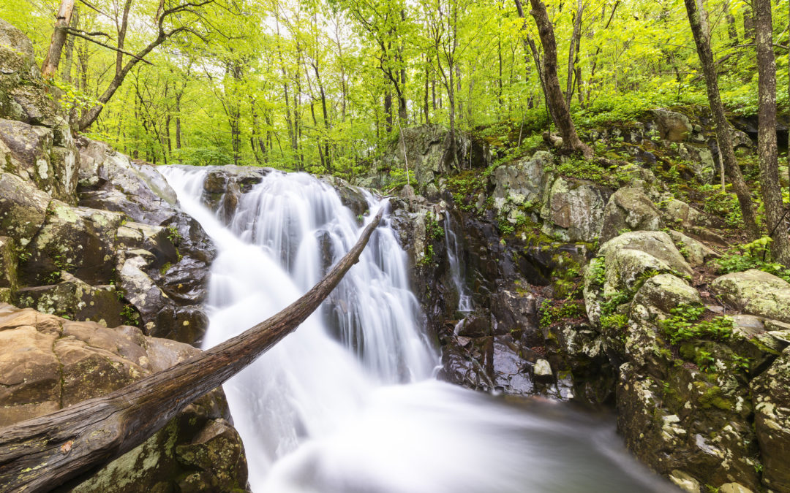

01 · WALK & HIKE

Edith J. Carrier Arboretum
Take a walk in James Madison University's stunning arboretum. Explore the trails, take scenic pictures, and learn how to garden.
Arboretum information ↗SHENANDOAH VALLEY · VIRGINIA
Fresh air is closer than you think. Find a new view, stretch your legs, and explore the landscapes that make this area special.
Pick your path ↓
CHOOSE YOUR ADVENTURE

Take a walk in James Madison University's stunning arboretum. Explore the trails, take scenic pictures, and learn how to garden.
Arboretum information ↗
Plan a day trip for overlooks, longer hikes, and classic Blue Ridge scenery.
Plan a visit ↗
Look for local waterways, scenic drives, and seasonal outdoor events throughout the region.
Explore local ideas ↗